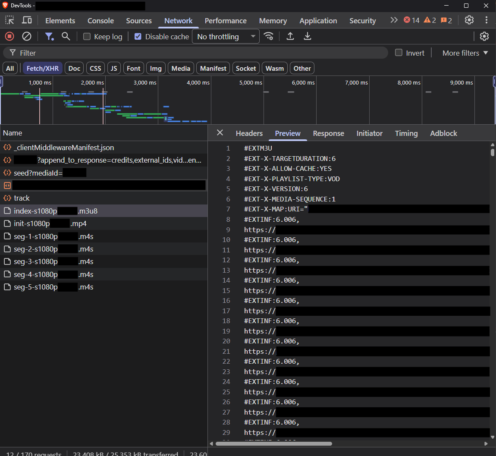

Downloading HLS Streams with DevTools and ffmpeg
How to download HLS streams with DevTools and ffmpeg on a Windows device.
Overview
- Website HTML pages used to reference the video source file directly, e.g.
src="/media/videos/hello-world.mp4" - That means when users load the video source file, they are loading the
hello-world.mp4. - If the connection is slower than the file's bitrate, playback stalls while it catches up.
- To improve streaming, the MP4 is broken down into pieces, and each piece is sent one at a time.
- One of the most widely adopted methods of doing this is HLS (HTTP Live Streaming).
HLS Streams
It was originally developed by Apple for iOS/Safari, and it is now supported almost everywhere.
Core structure:
master.m3u8 -> top-level manifest listing the available qualities
├── index-1080p.m3u8 -> variant playlist: segment list for one quality
├── index-720p.m3u8
└── index-480p.m3u8
An example master.m3u8:
#EXTM3U
#EXT-X-STREAM-INF:PROGRAM-ID=1,BANDWIDTH=6126617,RESOLUTION=1996x1080,FRAME-RATE=23.974,CODECS="avc1.64002a,mp4a.40.2"
media-id/1/index-s1080p.m3u8
#EXT-X-STREAM-INF:PROGRAM-ID=1,BANDWIDTH=16160812,RESOLUTION=3840x2076,FRAME-RATE=23.974,CODECS="avc1.640033,mp4a.40.2"
media-id/1/index-s2160p.m3u8
#EXT-X-STREAM-INF:PROGRAM-ID=1,BANDWIDTH=1306696,RESOLUTION=852x480,FRAME-RATE=23.974,CODECS="avc1.4d401e,mp4a.40.2"
media-id/1/index-s480p.m3u8
#EXT-X-STREAM-INF:PROGRAM-ID=1,BANDWIDTH=3140557,RESOLUTION=1332x720,FRAME-RATE=23.974,CODECS="avc1.4d4020,mp4a.40.2"
media-id/1/index-s720p.m3u8
Each variant playlist lists the segments. Traditionally these are .ts files; modern HLS also uses fMP4 .m4s fragments. The playlist carries an #EXT-X-MAP tag for the init segment reference and an #EXTINF tag for each duration:
#EXTM3U
#EXT-X-TARGETDURATION:6
#EXT-X-ALLOW-CACHE:YES
#EXT-X-PLAYLIST-TYPE:VOD
#EXT-X-VERSION:6
#EXT-X-MEDIA-SEQUENCE:1
#EXT-X-MAP:URI="https://example.com/init-s1080p.mp4"
#EXTINF:6.006,
https://example.com/seg-1-s1080p.m4s
#EXTINF:6.006,
https://example.com/seg-2-s1080p.m4s
#EXTINF:6.006,
https://example.com/seg-3-s1080p.m4s
#EXTINF:6.006,
https://example.com/seg-4-s1080p.m4s
#EXTINF:6.006,
https://example.com/seg-5-s1080p.m4s
#EXT-X-ENDLIST
Key characteristics:
- Plain-text
.m3u8playlists (derived from the M3U audio playlist format) - Historically used MPEG-TS segments (
.ts); modern HLS supports fMP4 (.m4s) too - Native playback support in Safari/iOS (no JS library needed) — this is why it's still dominant in Apple's ecosystem
- Everywhere else (Chrome, Firefox, Android), it needs a JS library such as hls.js, which uses MSE. This is why you see it under Fetch/XHR
- Live streaming: the playlist gets new
#EXTINFlines appended as segments are encoded, with no#EXT-X-ENDLISTuntil the stream ends - VOD: the playlist is complete upfront and ends with
#EXT-X-ENDLIST
Steps
Disable Abusive Debugger Statements
Reference: Disable Abusive Debugger Statements
- Before going to the target website, visit a site that lets you open the F12 developer tools.
- Press F12 to bring up the Developer Tools.
- Proceed to the target website.
- The developer tools will stop at the "Sources" tab and show the "debugger" line.
- Go to the line with
debuggerand right-click beside the line number. - Choose the option "Add conditional breakpoint…".
- Type
falseand press Enter. - Reload the page.
- You can now inspect the web page.
Getting the *index*.m3u8 Link
There are multiple ways to get the *index*.m3u8 link, i.e. the link that shows the details of the segmented video files. The master playlist, which lists the resolutions of the videos, does not always exist.
1. Search for m3u8
- From the developer tools (F12), go to the Network tab and search using the keyword
m3u8. - There should be a link whose URL ends with
m3u8. - Select the link matching
*index*.m3u8and copy its URL.
2. Filter by "Fetch/XHR"
- From the developer tools (F12), go to the Network tab.
- Click the "Fetch/XHR" filter.
-
You will see a single
.m3u8file, a.mp4file, and a couple of.m4sfiles.
-
Select the link matching
*index*.m3u8and copy its URL.
3. Observe the Network
Info
Method 1 relies on the request name containing m3u8. Method 2 will usually surface the request, but you still have to recognise it by name. Reading the response body works either way.
- Open the developer tools (F12) and go to the Network tab.
- Refresh the page so that we can see the new links as they come in.
- If there is no
.m3u8link, click on each link and read theResponsetab. - The response should show plain text with
#EXTM3Uas the first line (as shown earlier). - Select the link matching
*index*.m3u8and copy its URL.
Getting the Media
There are two ways I have tried to download the media.
-
Use ffmpeg to download the media file.
Info
Some sites reject
ffmpegbecause its request headers do not look like a browser's. Copy the headers from the Network tab and pass them in (PowerShell):ffmpeg -headers "Referer: https://example.com/`r`nUser-Agent: Mozilla/5.0 (Windows NT 10.0; Win64; x64)`r`nCookie: session=abc123`r`n" -i "https://example.com/media-id/1/index-s1080p.m3u8" -c copy saveasvid.mp4I have not needed this myself, so treat it as untested. It also will not help if the token is only on the
.m3u8URL, becauseffmpegdoes not add it to the segment requests. -
Create a script to download each segment (
*.m4s,*.ts, and others such as*.pngand*.html), including the*init*.mp4, which stores the information about the media file. Then create a second script that combines the segments and usesffmpegto produce a finished.mp4. The following snippet stitches the segments together, in order, into a temporarytemp_output.mp4, then callsffmpegto create the finalcombined.mp4.""" The snippet only works if the downloaded segments are named - `init.mp4` - `seg-*.m4s` Standardising them helps ensure the script works consistently. """ import sys import pathlib import shutil import re import subprocess # sort the files by segment number def _seg_key(p: pathlib.Path) -> int: """helper function to sort the file names by the numbers in the segment files""" m: re.Match = re.search(r'seg-(\d+)', p.name) return int(m.group(1)) if m else -1 # init.mp4 -> -1, so first # define the temporary folder that holds all the segment files temp_dir: pathlib.Path = pathlib.Path(__file__).parent / "temp" # define the temporary .mp4 file after stitching each segment temp_output_path: pathlib.Path = pathlib.Path(__file__).parent / "temp_output.mp4" # write each file to the 'temp_output.mp4' file with temp_output_path.open("wb") as writer: for file in sorted(temp_dir.glob("*.*"), key=_seg_key): with file.open("rb") as f: shutil.copyfileobj(f, writer, length=1024*1024) # run the ffmpeg command here try: output_name: str = str(pathlib.Path(__file__).parent / "combined.mp4") # ffmpeg must be reachable from the terminal subprocess.run( args=["ffmpeg", "-y", "-i", str(temp_output_path), "-c", "copy", output_name], capture_output=False, text=False, # set text=True to get stdout/stderr as strings check=True, # raises an exception if the exe returns a non-zero exit code ) except subprocess.CalledProcessError as e: print(f"ffmpeg failed with code {e.returncode}: {e}") sys.exit(1) except FileNotFoundError: print("ffmpeg not found on PATH") sys.exit(1)